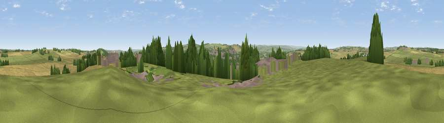

Viewpoint near Ovingham
#12437 in England · top 24% of its area beats it · near Ovingham · access?Where it is
The exact computed spot (NZ 09225 66225). Click the marker for map links.
Public access: no public right of way or access land is recorded at this exact spot — it may be on private land. Computed from Natural England's CRoW access layer and OpenStreetMap rights of way — not the legal definitive map. Always verify locally.
The view, rendered

A 360° render of this exact spot computed from the terrain model, tree cover and land cover — summer colours, afternoon light, calibrated against photographs of famous viewpoints. Real trees, hedges and buildings will differ in detail.
The panorama
Grey silhouette: terrain skyline in each direction (720 bearings, Earth curvature and refraction included). Dashed green: skyline with trees (+15 m) and buildings (+8 m) as obstacles. Blue strip: how far the ground is visible on each bearing.
Where the view opens
Wedge length = distance to the farthest visible ground on that bearing (vegetation-aware). Rings at 10, 25 and 50 km.
What fills the view
45% grassland · 28% cropland · 19% woodland · 8% built-up
Angular shares of the visible panorama (visual magnitude), not map area. Landscape diversity 0.54 (0–1 Shannon).
Key numbers
More beautiful places nearby
The staircase of upgrades: each row has a higher view potential than everything closer. Driving times are estimates from straight-line distance, calibrated against real road routing — check an actual route before setting out.
| Place | Direction | Drive | Score |
|---|---|---|---|
| Viewpoint near High Mickley | S · 4 km | ~10 min | 66.5 |
| Viewpoint near High Mickley | S · 5 km | ~11 min | 68.3 |
| Viewpoint near Greenside | SSE · 6 km | ~13 min | 74.2 |
| Viewpoint near Burnopfield | SE · 13 km | ~24 min | 75.4 |
| Pontop Pike | SSE · 15 km | ~26 min | 77.8 |
| Viewpoint near Rothbury | N · 33 km | ~50 min | 81.1 |
| Dove Crag | N · 33 km | ~50 min | 82.3 |
| Viewpoint near Glanton | N · 50 km | ~71 min | 82.9 |
54.99053, -1.85736 · source: screening · position refined by local search. Computed location — check access rights before visiting.